Vision & Why We Built This
Dispensary shopping is uniquely challenging. Customers face a wall of products differentiated by unfamiliar variables — strain types, terpene profiles, THC percentages, onset times, consumption methods. The result is choice paralysis at scale. Customers either default to what they already know or ask a budtender, creating a staffing bottleneck at the counter.
Every major dispensary platform today offers the same experience: category sidebar, filter dropdowns, product grid, search bar. AI integrations, when they exist, are typically a chat widget in the corner — a separate lane from the actual shopping surface. The customer has to toggle between "browsing mode" and "asking mode."
Our thesis is different. The AI response should be the shopping surface itself. When a customer says "something for sleep," the entire page should reorganize to show sleep-relevant products, annotated with why each one fits, sorted by the customer's personal terpene preferences. No chat bubble. No separate window. The store just... changes.
Cannabis retail has a higher need for guided selling than almost any other retail vertical. Customers literally cannot evaluate products from packaging alone. The industry-standard solution (human budtenders) does not scale to digital. AI that reshapes the store surface is the digital equivalent of a knowledgeable budtender walking you to the right shelf and explaining why each product fits your situation.
Two Interaction Modes
Smart Shelf
AI-reactive store surface. Looks like a normal dispensary e-commerce page — header, product grid, categories — but a search input at the top accepts natural language and reshapes the page around the query. Products remain visible at all times. The AI annotates, reorders, and groups them. Light theme, familiar retail layout.
Concierge
Full-screen conversational agent. Dark, immersive UI. The AI concierge IS the store. No product grids, no category nav. The user talks and the UI assembles product cards, comparisons, bundles, and recommendations inside the conversation thread. Think "personal shopper in a chat."
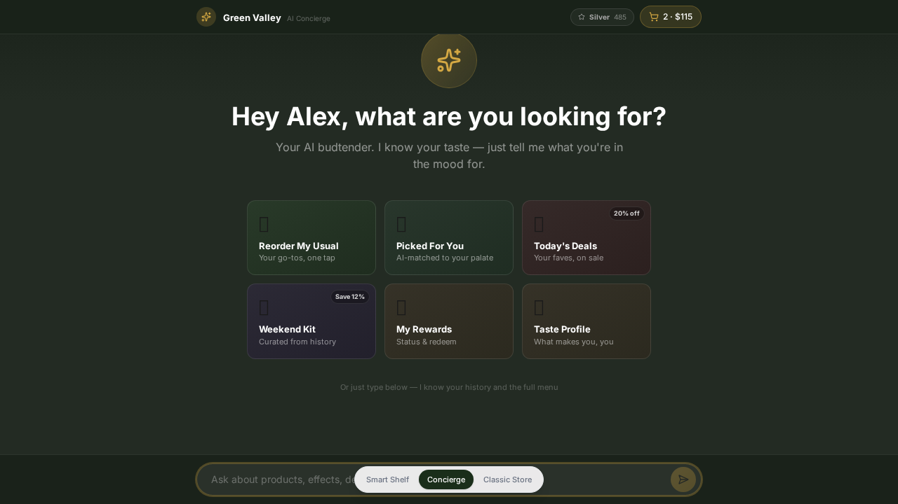
When users reach for each mode:
- Smart Shelf — "I want to browse edibles." "Show me today's deals." Quick, directed shopping tasks where the customer has some idea of what they want and wants to see the full assortment with AI help.
- Concierge — "Build me a weekend kit for two." "I'm new to cannabis, what's a good starting point?" Complex multi-turn questions, education-heavy sessions, and "assemble something for me" requests where the customer wants the AI to drive.
A toggle between modes lives in the sticky nav bar. Shared cart state persists across both modes so a customer can start in Concierge ("what's good for anxiety?"), get a recommendation, switch to Smart Shelf to compare that product against others in the category, and check out without losing context.
Forcing all AI interaction through a chat window alienates browse-oriented shoppers. Forcing all interaction through a product grid alienates discovery-oriented shoppers. The two-mode architecture meets both intents without compromising either experience.
The Smart Shelf Concept
When a customer types a query — "what's good for sleep?" — the system generates one or more shelves: horizontal or grid sections of the page, each with a title, subtitle, optional AI annotation badge, and a set of products. The page scrolls to the new shelf content with smooth animation. The previous home-screen shelves are replaced.
This is fundamentally different from a chatbot. There is no conversation thread on screen. There are no "user" and "assistant" message bubbles. The customer asks; the store surface changes. The search bar resets, ready for the next question. Breadcrumbs show where you are ("Home > 'What's good for sleep?'") and a single click returns to the home layout.
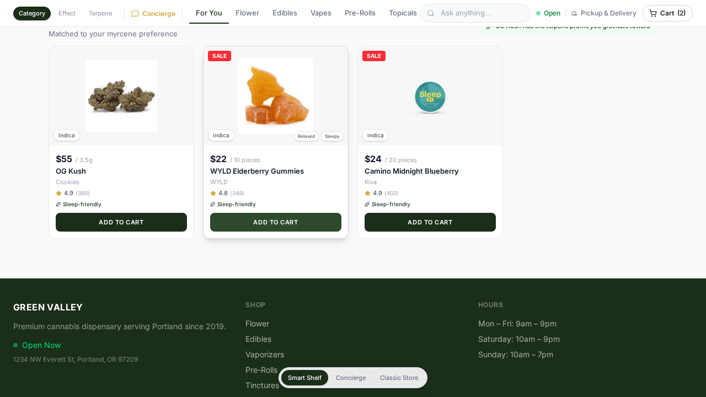
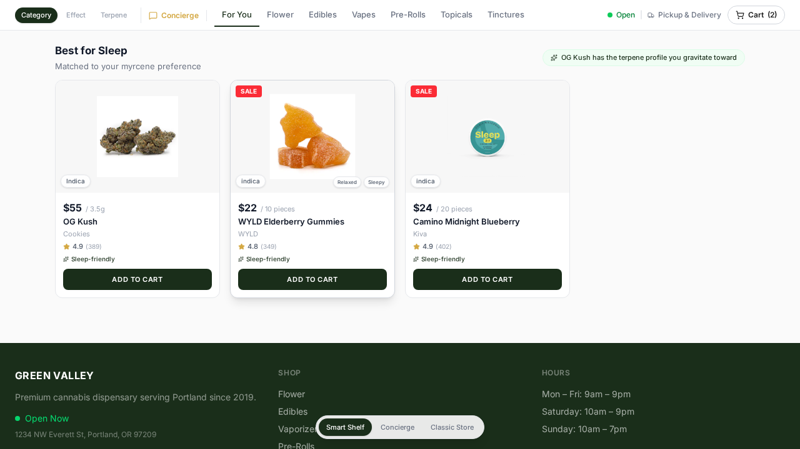
Shelf Anatomy
Every shelf has:
- Title — what this shelf contains ("Best for Sleep," "Your Regulars," "Today's Deals")
- Subtitle — context for why these products are shown ("Matched to your myrcene preference")
- AI Note badge — a green pill in the top-right with a sparkle icon explaining the AI's reasoning ("OG Kush has the terpene profile you gravitate toward")
- Product cards — each with an optional reason chip ("Terpene match," "94% match," "Purchased before") and optional match score percentage
The key UX principle: products are never hidden. Even when the AI is "thinking" (loading state), skeleton cards are visible in the grid. The transition from home to results is a page reshape, not a mode switch. The customer always feels like they are in a store, not in a chatbot.
Every chatbot-based product recommendation UI has the same problem: the customer sees text, then has to mentally connect it to products they can't see. The shelf model keeps products in their natural visual format — image, price, rating, add-to-cart button — while layering AI annotation directly onto the card. The cognitive overhead is near zero.
Three Browse Paradigms
The sticky navigation bar has a mode switcher (three small pills: Category, Effect, Terpene) that transforms the tab row beneath it. Each mode has its own set of tabs, its own "all" view with a visual explorer, and its own sorting logic for product results.
Category Mode
The familiar paradigm: Flower, Edibles, Vapes, Pre-Rolls, Topicals, Tinctures. The "For You" default tab shows the personalized home screen. Clicking a category tab shows all products in that category, sorted by rating. This is the baseline mental model — "I know I want an edible."
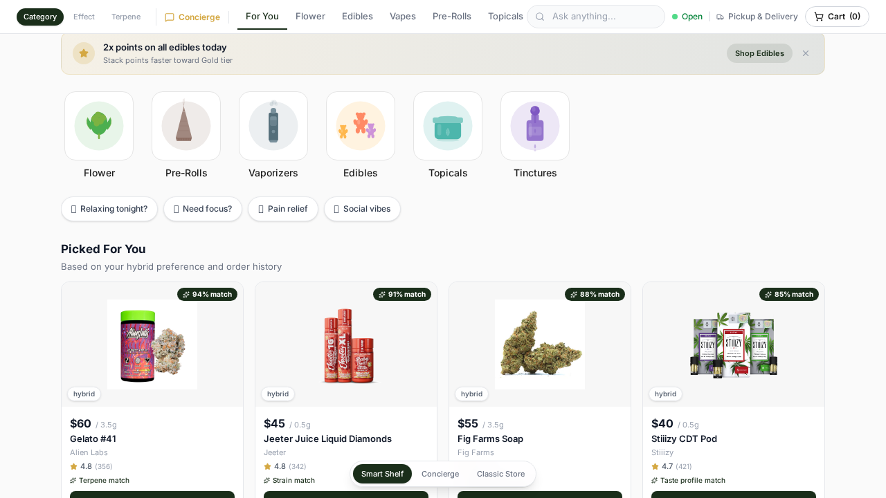
Effect Mode
Nine effect categories: Relaxed, Happy, Creative, Sleepy, Calm, Energetic, Uplifted, Focused, Pain Relief. The "all" view is a visual explorer — a grid of gradient-colored cards, each with an emoji, product count, evocative description ("Lights out in 45 minutes. Guaranteed."), and preview of top products. Clicking an effect filters to all products with that effect tag, annotated with match scores for returning customers. An "Effect Spectrum" bar visualization shows the energizing-to-sedating continuum.
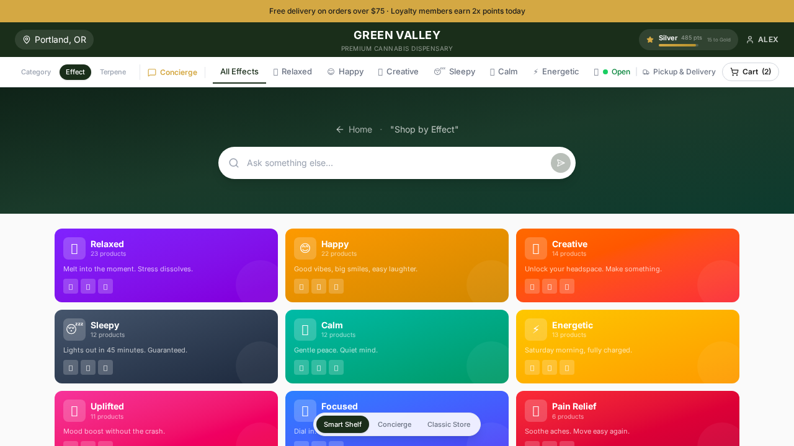
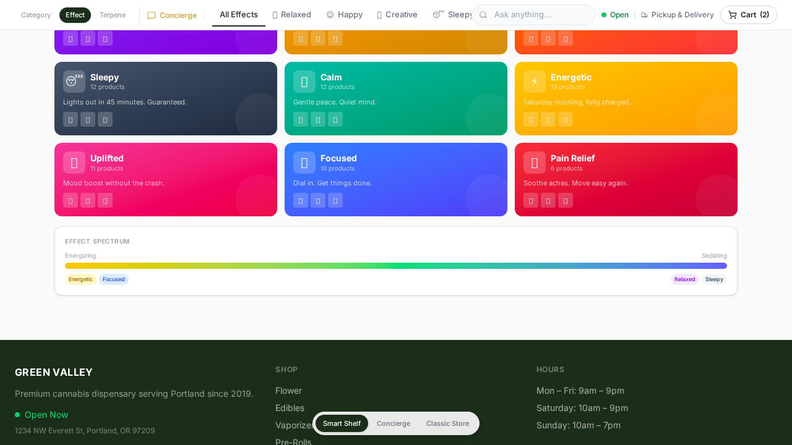
Terpene Mode
Seven terpene categories: Myrcene, Caryophyllene, Limonene, Linalool, Terpinolene, Ocimene, Pinene. The "all" view is a terpene explorer — cards showing each terpene's name, emoji, aroma profile, product count, average concentration bar, expected effect ("Pain Relief & Calm"), and a short educational description. Clicking a terpene shows all products containing it, sorted by concentration (not rating), with the percentage displayed on each card.
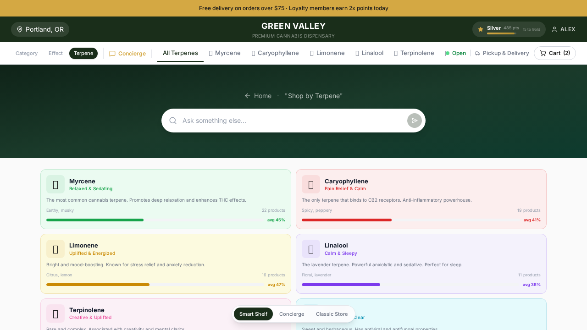
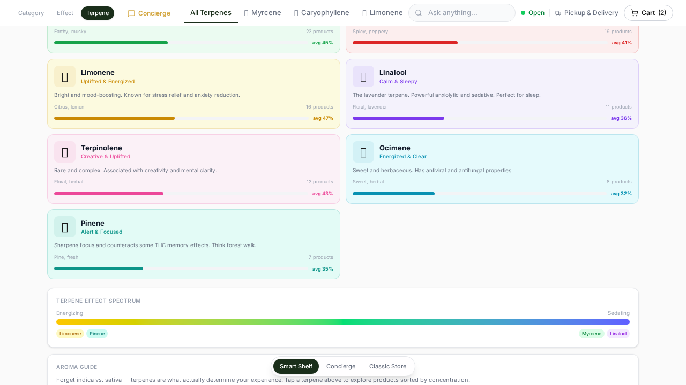
Terpenes are the real driver of the cannabis experience. The indica/sativa/hybrid classification is genetically outdated — most modern strains are polyhydrids. Two "indicas" can produce completely different effects depending on their terpene profiles. A high-myrcene flower will be sedating; a high-limonene one will be uplifting — regardless of what the label says. Terpene-first browsing gives informed customers the navigation paradigm that actually predicts their experience, and educates new customers about what actually matters. No other dispensary platform offers this as a primary browse mode.
The Terpene Explorer also includes an Aroma Guide callout that explicitly states: "Forget indica vs. sativa — terpenes are what actually determine your experience." This is an intentional educational intervention at the point of browsing.
Personalization Engine
The prototype simulates a returning customer ("Alex") with a complete profile:
| Attribute | Value | How It's Used |
|---|---|---|
| Preferred Strain | Hybrid | Sort order bias, match score boost |
| Top Effects | Relaxed, Creative, Happy | Effect match scoring, AI note generation |
| Favorite Terpenes | Myrcene, Limonene, Caryophyllene | Terpene overlap scoring (3 pts per match) |
| Tolerance | Moderate | Dosing context in recommendations |
| Typical Budget | $85 | Price-appropriate suggestions |
| Purchase History | 23 orders, 11 distinct products | Reorder shelf, "purchased before" tags |
| Loyalty Points | 485 (Silver tier) | Tier visualization, points-earning previews |
"For You" Shelf
The default home screen leads with a "Picked For You" shelf. Each product shows a match score (e.g., "94% match") and a reason chip ("Terpene match," "Strain match," "Taste profile match"). The scoring algorithm weights terpene overlap highest (3 points per shared terpene), then category fit, strain type match, effect overlap, price fit, and rating. This means two products in the same category can have very different match scores based on their terpene profiles.
Reorder Shelf
"Buy Again" surfaces products from purchase history, sorted by purchase frequency. Products bought 2+ times surface first. The query "reorder my usual" generates a dedicated reorder shelf with lifetime stats ("Based on 23 orders, $1,847 lifetime").
Profile-Aware AI Annotations
When the AI responds to any query, it references the taste profile. "Show me flower" returns flower sorted by rating but annotated with "Sorted for your hybrid preference." "What's good for sleep?" returns sleep products but notes "OG Kush has the terpene profile you gravitate toward." This ambient personalization is the key differentiator — the AI never just shows generic results.
Cannabis is a high-repeat-purchase vertical. The average dispensary customer visits 2-3 times per month. Personalization that remembers and adapts to their terpene preferences, budget patterns, and consumption history reduces decision time dramatically and increases average order value. The "why this matches you" annotation is the digital equivalent of a budtender saying "based on what you liked last time, you'll love this."
Product Detail Experience
Clicking any product card opens a right-side slide-over panel (440px on desktop, full-screen on mobile) with spring animation. The panel layers over the shelf content rather than navigating away, preserving the customer's browsing context.
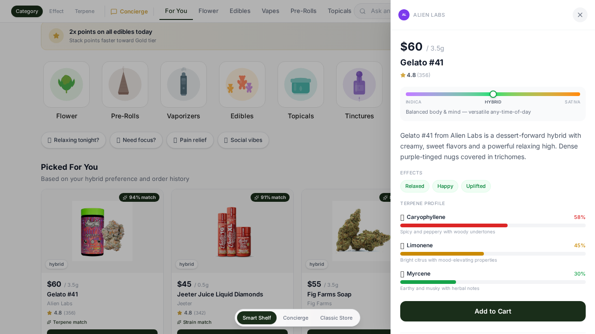
Hero Image with Brand Gradient
The top of the panel is a 280px image area with a subtle gradient derived from the product's brand color. This creates visual brand identity without heavy branding — a PAX product has an indigo tint, a Cookies product has a blue tint, a Raw Garden product has a green tint. The product image is centered and drops a shadow for depth.
Strain Spectrum Visualization
Below the hero, a horizontal gradient bar runs from purple (indica) through green (hybrid) to orange (sativa). A positioned dot marker shows where this product falls on the spectrum. Below the bar, a one-line description explains what this position means: "Full-body relaxation — best for evening wind-down" for indica, "Energizing & uplifting — great for daytime activities" for sativa. This replaces the typically unhelpful "Indica" text badge with a visual that communicates the actual expected experience.
Animated Terpene Profile
Each terpene in the product is displayed with its emoji, name, a percentage bar that animates from zero to its concentration level on mount, and a one-line description ("Earthy and musky with herbal notes"). The bars use terpene-specific colors (green for Myrcene, red for Caryophyllene, gold for Limonene, purple for Linalool, pink for Terpinolene, cyan for Ocimene, teal for Pinene) for quick visual identification. This section answers the most important question in cannabis retail: "What will this product actually feel like?"
Effects Tags
Rounded green pills showing each effect ("Energetic," "Creative," "Happy"). These are scannable at a glance and map directly to the Effect browse mode — a customer could see "Creative" here, switch to Effect mode, and explore all Creative products.
Similar Products Discovery
Below the add-to-cart button, a "Similar Products" horizontal scroll row shows 4 products scored by category match, strain type overlap, shared effects, and shared terpenes. Each thumbnail is clickable and navigates within the same slide-over panel. This creates a discovery loop: view product, see similar, view similar product, see its similar products.
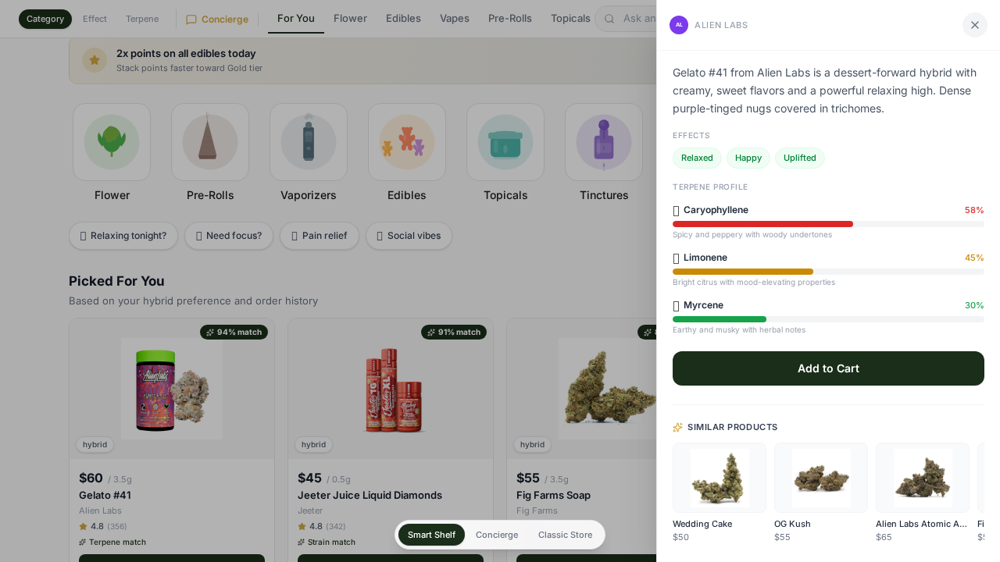
Most dispensary product pages show a text description, THC percentage, and a price. The terpene profile, strain spectrum, and effects visualization give customers the information they actually need to make an informed purchase decision. The animated terpene bars in particular transform an abstract data point (0.48% Myrcene) into a visual comparison that any customer can understand.
Smart Cart & Upsell
The cart is a right-side slide-over drawer matching the product detail panel's interaction pattern. It contains three distinct layers beyond the item list:
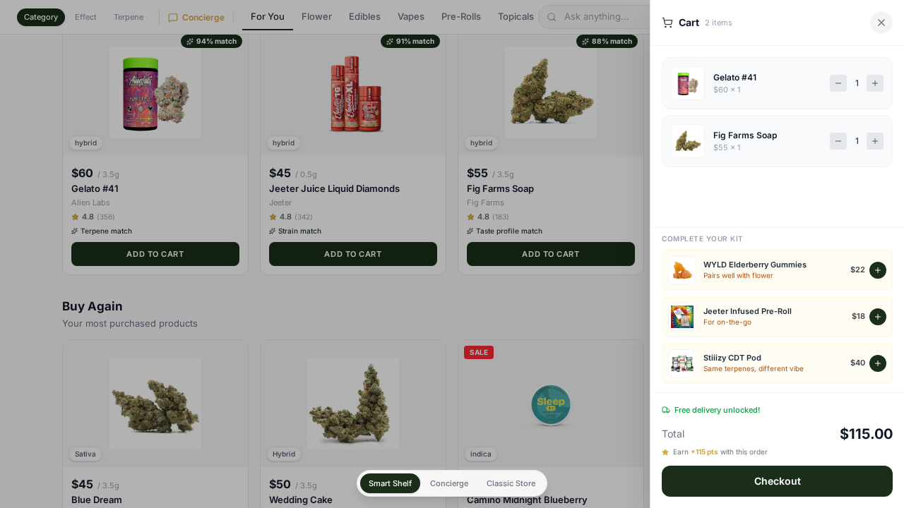
"Complete Your Kit" Cross-Category Suggestions
Below the cart items, up to 3 upsell suggestions appear. The upsell logic works on two axes:
- Complementary categories — Flower in cart suggests edibles ("Pairs well with flower") or pre-rolls ("For on-the-go"). Edibles suggest vapes ("While you wait for onset"). Vapes suggest edibles ("Extend the session"). This mirrors how experienced cannabis consumers actually combine products.
- Shared terpenes, different category — If your cart has high-myrcene flower, the system suggests a high-myrcene edible ("Same terpenes, different vibe"). This leverages the terpene profile data in a way that feels genuinely helpful rather than randomly promotional.
Suggestions only show products rated 4.5+ and exclude anything already in the cart. Each suggestion card shows the product image, name, price, the reason for the suggestion, and a one-tap add button.
Free Delivery Threshold Progress
Below the upsells, a progress bar shows how close the cart total is to the $75 free delivery threshold. The remaining dollar amount is displayed ("$12 away"). Once the threshold is hit, a green "Free delivery unlocked!" badge replaces the progress bar. This is a proven conversion driver in cannabis e-commerce where delivery fees are a common cart abandonment cause.
Loyalty Points Earned Preview
Next to the cart total, a gold star icon shows how many loyalty points this order will earn ("+85 pts with this order"). This preview connects the current purchase to the long-term loyalty loop — the customer sees the reward before they commit.
Cannabis cart sizes average 2-3 items. The terpene-aware cross-sell ("same terpenes, different category") is unique to this prototype and reflects how cannabis actually works — a customer who likes myrcene-heavy flower will probably enjoy a myrcene-heavy edible. This is a meaningful recommendation, not a random "customers also bought" widget.
Loyalty & Gamification
The loyalty system has four tiers:
| Tier | Points Range | Perks |
|---|---|---|
| Bronze | 0 – 249 | 1x points |
| Silver | 250 – 499 | 1.5x points |
| Gold | 500 – 999 | 2x points + free delivery |
| Platinum | 1,000+ | 3x points + priority + 10% off |
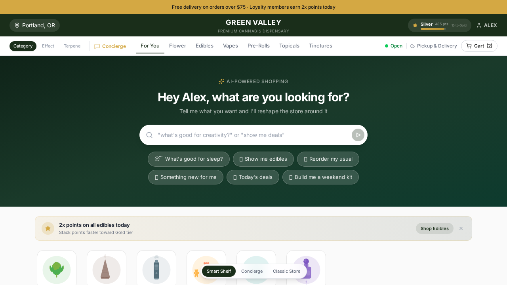
Header Progress Bar
In the brand bar (dark green), a compact loyalty widget shows: current tier name, point count, a thin progress bar toward the next tier, and "X to [next tier]" text. Clicking this widget triggers a full loyalty shelf via the AI query system. The progress bar uses a gold gradient that matches the brand accent color.
Loyalty Shelf
Asking "show my rewards" or "loyalty points" generates a dedicated shelf showing: tier badge, total points, redeemable dollar value (points/100 * $5), progress bar to next tier with perks preview, and a companion shelf of "Earn 2x Points" products (currently edibles). This connects the loyalty status directly to actionable shopping.
Point Multiplier Promotions
The prototype includes a "2x points on all edibles today" promotion visible in the announcement bar, promo banner, and loyalty shelf. The system notes which categories have active multipliers and annotates relevant product cards ("2x points today"). This creates urgency around loyalty acceleration.
Cannabis dispensaries with loyalty programs see 30-40% higher visit frequency. But loyalty only works if customers are aware of their progress. Putting the tier progress bar in the header — visible on every page — and making it queryable through the AI ("how close am I to Gold?") means the loyalty loop is always active, not buried in an account settings page.
Brand & Visual Identity
Three-Tier Header
- Announcement Bar (gold background) — Promotional messaging. "Free delivery on orders over $75. Loyalty members earn 2x points today." Small, scannable, dismissible on promo banners.
- Brand Bar (dark green) — Store identity layer. Centered store name ("Green Valley — Premium Cannabis Dispensary"), location badge (Portland, OR), loyalty widget, user name. This is the operator's brand canvas.
- Navigation Bar (white, sticky) — Functional layer. Browse mode switcher, category/effect/terpene tabs, Concierge toggle, store status (Open/Closed), pickup/delivery indicator, cart button. Sticks on scroll; the search bar slides in when the hero scrolls out of view.
Color System
The dark green primary is intentionally muted — not bright cannabis green, but a sophisticated forest tone. The gold accent is warm, not yellow, evoking premium quality. The overall palette positions cannabis retail as premium, approachable, and professional.
Footer
Dark green background matching the brand bar. Three columns: store identity and address with live "Open Now" indicator, shop links (all six categories as clickable navigation), and store hours. A bottom bar shows copyright and "Powered by dutchie · AI Concierge" branding. The footer links are functional — clicking a category navigates to that category shelf.
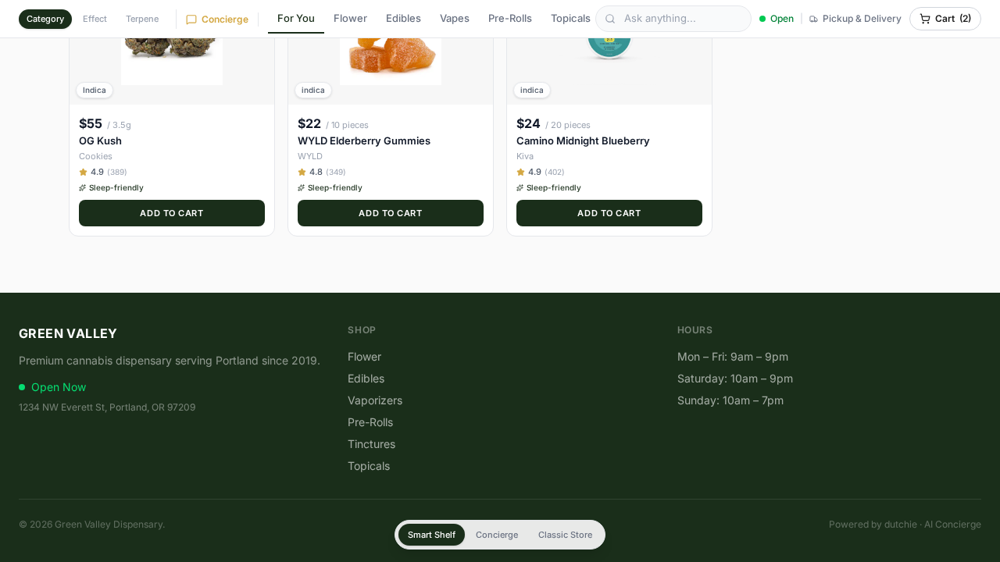
White-Label Template
"Green Valley" is a fictional dispensary. The design is built as a template where the store name, address, hours, color scheme, and logo area are all swappable. The three-tier header, color token system, and component architecture are designed for multi-tenant deployment where each dispensary gets their own branded instance.
Home Screen Composition
The home screen assembles five distinct zones below the hero search bar:
1. Promo Banner
A subtle card with gold accent highlighting the active promotion ("2x points on all edibles today — Stack points faster toward Gold tier"). Includes a "Shop Edibles" CTA button and a dismiss X. This is the highest-intent conversion element on the page.
2. Category Card Tiles
Six rounded square tiles (Flower, Pre-Rolls, Vaporizers, Edibles, Topicals, Tinctures) in a horizontal scroll row. Each tile uses a custom SVG illustration rather than a stock photo. Hover state adds a green border and subtle shadow. These are the fastest path to a category for shoppers who know what product type they want.
3. Quick Intent Pills
Four horizontal pill buttons with emoji prefixes: "Relaxing tonight?" "Need focus?" "Pain relief" "Social vibes". Each pill triggers a full AI query that reshapes the page. These are not category filters — they are need-state entry points. A customer who doesn't think in product categories ("I don't know if I want flower or an edible, I just want to relax") can express their intent directly.
4. "Picked For You" Shelf
The first product shelf shows 4 AI-recommended products the customer hasn't tried yet, each with a match score and reason chip. The subtitle reads "Based on your hybrid preference and order history." This is the personalization engine's primary surface.
5. "Buy Again" and "Today's Deals" Shelves
Below the recommendations: a reorder shelf of previously purchased products ("Ordered before" chip) and a deals shelf showing sale items with percentage-off badges and urgency text.
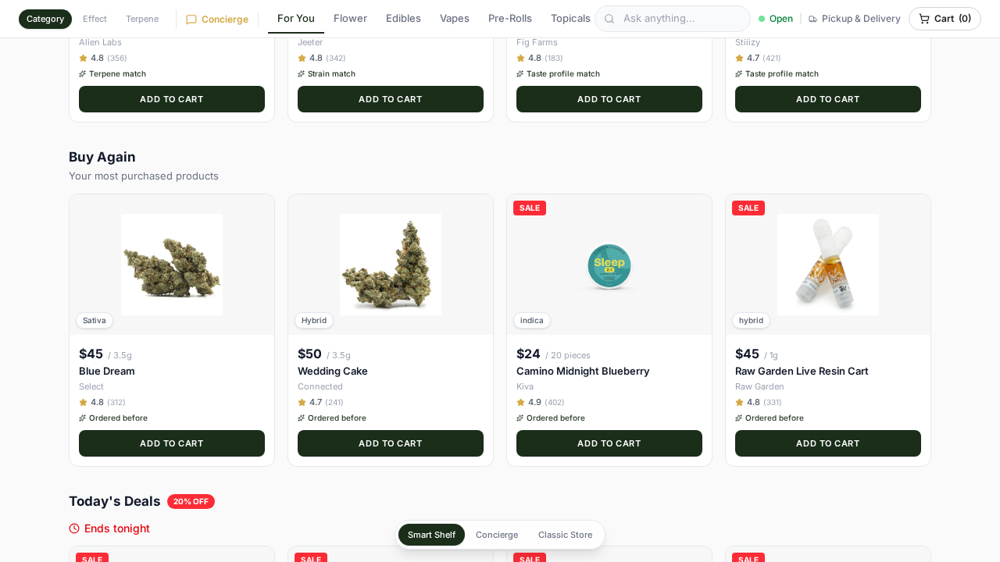
Deliberate Omissions
The home screen intentionally does not include a brand spotlight row or staff picks section in the default layout. Early iterations included these (and they exist as fully implemented components in the codebase), but they added clutter without serving a clear intent. The decision was to maintain focus on what matters most: personalized recommendations, quick intent capture, and deals. Fewer, better-matched products convert better than showing the full catalog with no guidance.
Most dispensary home pages show 40+ products in a grid with no hierarchy. The SmartShelf home shows approximately 12 products, all personalized, with three alternative entry paths (categories, intents, search). This is a deliberate bet that showing fewer, better-matched products converts higher than showing the full catalog with no guidance.
AI Query System
The query system is a two-tier architecture:
Tier 1: Local Pattern Matching (Instant)
Common queries are handled entirely client-side with no AI model call. The system checks the input string against known patterns and constructs shelf responses directly from the product catalog and user profile. This produces instant results (with a brief artificial delay for perceived processing) for the most common shopping intents:
| Query Pattern | Shelf Type | Response |
|---|---|---|
| "reorder my favorites" | Reorder | Products from purchase history, sorted by frequency |
| "something new for me" | Recommended | Untried products scored against taste profile |
| "today's deals" | Deals | Sale items with urgency messaging |
| "deals on my favorites" | Deals | Sale items filtered to purchased brands/categories |
| "my taste profile" | Profile + Recommended | Taste profile card + profile-matched products |
| "loyalty points" | Loyalty + Products | Rewards status + 2x point category products |
| "build me a weekend kit" | Bundle | Personalized 3-product bundle with timeline |
| "evening wind down" | Bundle | Indica flower + gummies bundle with session arc |
| "what's good for sleep" | Products | Sleep-friendly products with terpene annotation |
| "show me flower" | Products | Category filter with personalized sort |
| "compare top flower" | Comparison | Side-by-side table (price, THC, type, rating, effects) |
Tier 2: Gemini Fallback (AI-Generated)
Queries that don't match any local pattern are sent to Gemini with a system prompt that includes the full product catalog and user profile. The AI response text becomes an "ai-text" shelf (green card with sparkle icon). An enrichment layer then scans the AI text and user query to extract actionable shelf types — product recommendations, deals, comparisons, bundles — and renders them as interactive shelves below the text.
Shelf Type Inventory
Each shelf type has its own renderer component with specialized UI: bundles have a timeline visualization, comparisons have a table layout, deals have urgency badges, recommended products have match scores, and explorer shelves have interactive card grids.
The two-tier architecture means the 80% of queries that are common shopping intents get instant, deterministic responses — no latency, no hallucination risk. The remaining 20% (education questions, complex multi-factor requests) get the full power of an LLM. This is the right tradeoff for e-commerce: speed and reliability for buying, depth and flexibility for exploring.
The Concierge Mode
The Concierge ("AgentStore") is a fundamentally different interaction paradigm. The UI is dark-themed and immersive. There is no product grid, no category navigation, no filter sidebar. The customer types or taps suggested prompts, and the AI responds with rich message cards that embed products, comparisons, bundles, and educational content directly in the conversation thread.
When Concierge is Better
- Multi-turn exploration — "I want something relaxing but I also need to be functional. Not too strong. What about edibles vs. flower for this?" This requires back-and-forth that a single-query shelf can't support.
- "Build me a kit" — Weekend bundles, evening routines, and multi-product session planning work better in conversation where the AI can explain the arc ("start with flower at 7 PM, gummies at 9 PM, pre-roll at 11 PM").
- Education — "What's the difference between indica and sativa?" "How do terpenes work?" "What's a good starting dose for edibles?" These are information-seeking, not shopping, and a conversational format is natural.
- Complex comparisons — "Compare these three vapes on flavor, potency, and value." The Concierge renders this as an inline comparison table within the conversation.
Rich Message Types
Assistant messages in Concierge can contain:
- Product cards with image, price, rating, and add-to-cart — inline in the message
- Comparison tables for side-by-side product evaluation
- Bundle cards with session timeline, original vs. bundle price, and "Add All" button
- Reorder cards with purchase history context and order count
- Deal cards with discount percentages and urgency messaging
- Taste profile visualizations with effect spectrum bars
- Loyalty status cards with tier progress and redeemable value
- Recommended product grids with match scores and reasoning
- Follow-up chips — contextual next-action suggestions that change based on the previous query
- "Next Actions" cards — gradient-styled buttons suggesting where to go next ("Something new," "Deals," "Weekend kit")
Conversation Context
Messages include personal insights ("You've spent $1,847 over 23 orders"), follow-up annotations ("Based on your 23 orders, these are your regulars"), and suggested chips that adapt to the conversation state. After a reorder query, chips suggest "Something new" and "Weekend kit." After a deals query, chips suggest "Reorder go-tos" and "My rewards." This adaptive chip behavior creates a guided shopping flow within the conversation.
The Concierge mode proves that conversational commerce works for cannabis when the UI is rich enough. The key insight: product cards, not text descriptions, must be the atomic unit of the conversation. Customers don't want to read about products — they want to see, evaluate, and add-to-cart inline. The Concierge achieves this while keeping the full depth of multi-turn conversation.
Product Catalog Design
Catalog Composition
| Category | Count | Example Brands |
|---|---|---|
| Flower | 13 | Select, Cookies, Connected, Alien Labs, Fig Farms, Seed Junky |
| Edibles | 9 | WYLD, Kiva/Camino, Wana, Plus, Korova, Breez |
| Vapes | 10 | PAX, Stiiizy, Raw Garden, Heavy Hitters, Dosist, Select, Jeeter |
| Pre-Rolls | 5 | Jeeter, Lowell Herb Co |
| Topicals | 2 | Papa & Barkley, Mary's Medicinals |
| Tinctures | 1 | Papa & Barkley |
Product Data Model
Every product includes:
- Core attributes — name, brand, category, price, weight, THC percentage, optional CBD ratio
- Effects array — 2-3 tagged effects per product (Relaxed, Happy, Creative, Sleepy, Calm, Energetic, Uplifted, Focused, Pain Relief)
- Terpene profiles — 2-3 terpenes per product, each with name, emoji, description, and percentage concentration. This is the key data layer that enables terpene browsing and terpene-aware recommendations.
- Strain type — indica, sativa, hybrid, or CBD
- Brand metadata — brand name, brand color (hex), brand initials. The brand color is used for the product detail hero gradient and brand avatar badges.
- Rating and review count — simulated review data for social proof
- Sale data — optional onSale flag and originalPrice for deal display
- Professional image — high-quality product photograph (webp/jpg/png)
thc, cbd?, strainType, effects[], terpenes[],
rating, reviewCount, image, onSale?, originalPrice?,
description }
Image Quality Decision
The prototype originally included concentrate products and additional brands. These were removed from the catalog because professional product images were not available for them. The comment in the product data file ("Concentrates removed — no professional images available") documents this deliberate choice.
This was a product quality decision, not a technical limitation. A dispensary shopping experience with inconsistent image quality — some products with professional shots, others with placeholder emojis — degrades the entire catalog's perceived quality. We chose to reduce the catalog size rather than compromise visual consistency. Products without images fall back to emoji icons, but this is treated as a failure mode, not a design pattern.
Cannabis products cannot be evaluated by smell or touch in a digital context. The product image is the primary decision-making input for online shoppers. Pairing high-quality images with rich terpene data creates a product detail experience that actually helps customers choose — unlike the text-heavy, image-poor product pages that are standard in dispensary e-commerce today.
What's Next — Production Considerations
What the Prototype Proves
- The shelf-based AI response model works. Customers can query in natural language and receive product-rich, visually browsable results without a chat UI paradigm.
- Terpene-first browsing is viable and valuable. It provides a navigation model that actually predicts the customer's experience.
- Two modes complement each other. Smart Shelf for browse-heavy tasks, Concierge for conversation-heavy tasks, shared cart state across both.
- AI annotations on product cards add genuine value. Match scores, reason chips, and contextual "why this matches you" text help customers make faster, more confident decisions.
- Bundle and timeline UX resonates. The "weekend kit" timeline (7 PM flower, 9 PM edibles, 11 PM pre-roll) turns a cross-sell into a narrative.
What Production Needs to Build
| Area | Prototype State | Production Need |
|---|---|---|
| Authentication | Hardcoded user profile | Real auth (OAuth/SSO), customer account system, profile built from actual purchase history |
| Inventory | Static product array | Real-time inventory integration, stock levels, menu sync with POS |
| AI Model | Gemini via client-side API call | Server-side AI with fine-tuned model, guardrails, compliance review, response caching |
| Personalization | Client-side scoring algorithm | Server-side ML pipeline, A/B testing framework, collaborative filtering at scale |
| Accessibility | Minimal ARIA, no keyboard nav audit | Full WCAG 2.1 AA compliance, screen reader support, keyboard navigation |
| Mobile | Responsive breakpoints but desktop-first | Mobile-first rebuild, touch gestures, bottom sheet patterns, native-feel transitions |
| Performance | ~40 products, all loaded at once | Pagination, virtual scrolling, image CDN, lazy loading, search index |
| Checkout | Cart UI only, no actual checkout | Full checkout flow, payment integration, delivery/pickup scheduling |
| Compliance | None | Age verification, state-specific regulations, product claim restrictions |
| Analytics | None | Event tracking (queries, shelf interactions, add-to-cart, conversion funnel) |
What to Preserve
The following design decisions should survive the production rebuild:
- The shelf-based AI response pattern. The AI response is always a page reshape, never a chat bubble. Products are always visible.
- Terpene-first browsing as a first-class navigation mode. Not a filter — a full browse paradigm with its own explorer view, sorting logic, and educational content.
- Visual product annotation. Match scores, reason chips, AI note badges. Every product card can carry context about why it's being shown.
- The two-mode architecture. Smart Shelf for browsing with AI assistance, Concierge for conversation-first shopping. Shared cart state.
- The three-tier header hierarchy. Announcement bar, brand bar, sticky nav. This creates clear information architecture and the right level of visual density.
- Bundle timeline visualization. The session arc ("7 PM → 9 PM → 11 PM") is a powerful narrative device for cross-sell bundles.
- Animated terpene profile bars. The animated percentage bars in product detail transform abstract data into comprehensible visuals.
- Strain spectrum visualization. The indica-hybrid-sativa gradient bar with positioned indicator is more informative than a text label.
- The local-first query architecture. Common shopping intents should always be instant. LLM fallback is for the long tail.
- The "Complete Your Kit" upsell logic. Complementary category + shared terpene scoring is cannabis-specific and genuinely helpful.
The biggest risk in a prototype-to-production handoff is losing the design intent. This prototype is not a technical demo — it is a thesis about how AI should integrate with e-commerce. The thesis is: the AI reshapes the store, not the conversation. Production should optimize, scale, and harden the infrastructure, but the interaction model should be treated as proven and preserved.
SmartShelf AI Concierge — Design Review · Dutchie · March 2026